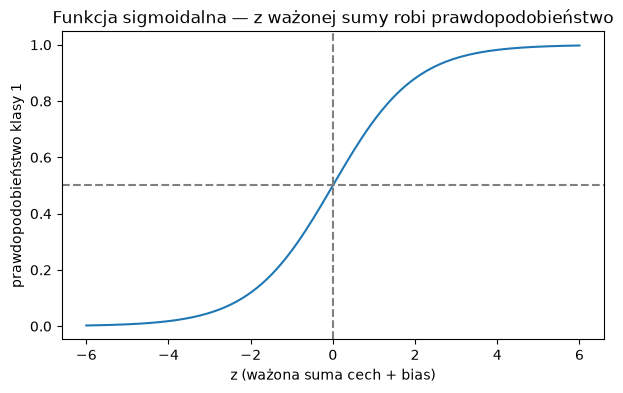
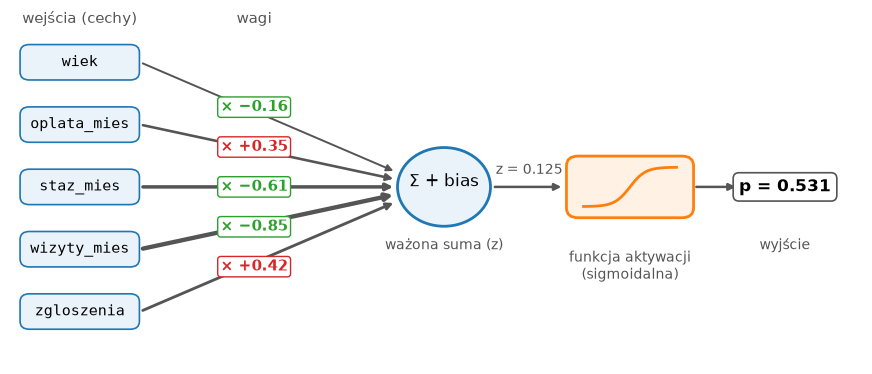
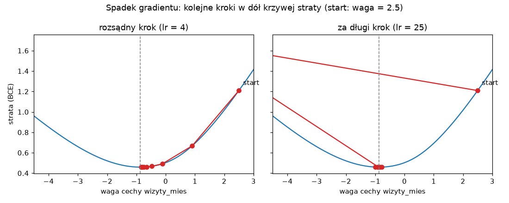
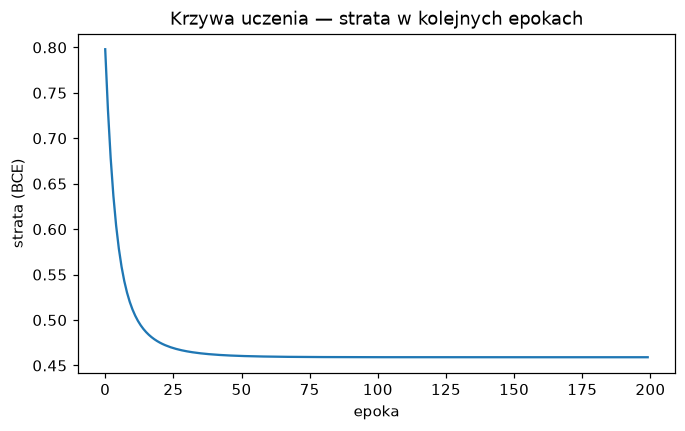
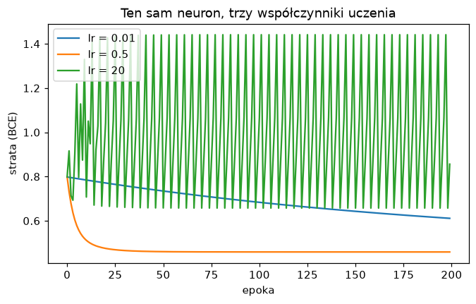

Zajęcia 4#
Od regresji logistycznej do sztucznego neuronu#
Na poprzednich zajęciach regresja logistyczna wygrała (albo zremisowała) z modelami, które wyglądały na sprytniejsze, i obiecaliśmy, że okaże się pierwszym krokiem do sieci neuronowych. Dziś rozbieramy ją na części. Zobaczysz, że w środku są tylko wagi, jedna suma i jedna funkcja — i że dokładnie tak samo wygląda sztuczny neuron, cegiełka, z której zbudowane są wszystkie sieci neuronowe, od rozpoznawania twarzy po ChatGPT.
Potem odpowiemy na pytanie, którego do tej pory nie zadawaliśmy: jak model
się uczy? Co tak naprawdę dzieje się w środku fit? Na koniec zbudujemy ten
sam neuron od zera w PyTorch — bibliotece, w której od teraz będziemy
budować sieci.
Po dzisiejszych zajęciach będziesz w stanie:
- odczytać wagi i bias wytrenowanej regresji logistycznej i powiedzieć, co znaczą,
- policzyć ręcznie w numpy prawdopodobieństwo, które zwraca model,
- wyjaśnić, czym jest sztuczny neuron i funkcja aktywacji,
- wyjaśnić, czym jest funkcja straty i jak spadek gradientu poprawia wagi,
- zbudować i wytrenować jeden neuron w PyTorch i odczytać krzywą uczenia,
- rozpoznać na wykresie za mały i za duży współczynnik uczenia.
Przykłady z zajęć w Colabie
Cały materiał z tej strony jest też w gotowym notatniku — z kodem do uruchomienia. Otwórz go i uruchamiaj komórki po kolei, czytając materiał. Żeby zachować swoje zmiany, zapisz kopię: Plik → Zapisz kopię na Dysku.

Godzinę temu na Data Science w Pythonie
Grupowaliśmy i łączyliśmy dane MeritoBanku. Wyszło m.in., że odsetek niespłaconych kredytów rośnie z każdym kolejnym kredytem, który klient już spłaca, a opóźnienia w ostatnim roku są ważniejsze niż cel kredytu. W zadaniu zobaczysz, czy neuron doszedł do tych samych wniosków — tyle że zapisanych w postaci wag.
Plan na dziś#
| Blok | Czas |
|---|---|
| Regresja logistyczna pod lupą — wagi, bias, sigmoida | 10 min |
| Sztuczny neuron | 5 min |
| Jak neuron się uczy — funkcja straty i spadek gradientu | 12 min |
| Neuron w PyTorch | 15 min |
| Współczynnik uczenia i czego jeden neuron nie umie | 3 min |
| Zadanie 4 | 45 min |
Regresja logistyczna pod lupą#
Dane#
Pracujemy na siłowni z zajęć 2 — przewidujemy, czy klient zrezygnuje, na podstawie pięciu cech liczbowych. Dzielimy dane i skalujemy jak na zajęciach 3, tylko tym razem bez pipeline: za chwilę zajrzymy modelowi do środka i chcemy mieć przeskalowane liczby pod ręką.
import numpy as np
import pandas as pd
from sklearn.model_selection import train_test_split
from sklearn.preprocessing import StandardScaler
URL = "https://kubzal.github.io/wsb-merito/semestr_zimowy_2026_27/uczenie_glebokie/dane/silownia_czyste.csv"
df = pd.read_csv(URL)
cechy = ["wiek", "oplata_mies", "staz_mies", "wizyty_mies", "zgloszenia"]
X = df[cechy]
y = df["zrezygnowal"]
X_train, X_test, y_train, y_test = train_test_split(
X, y, test_size=0.2, random_state=42, stratify=y
)
scaler = StandardScaler()
X_train_s = scaler.fit_transform(X_train)
X_test_s = scaler.transform(X_test)
Wagi i bias#
from sklearn.linear_model import LogisticRegression
model = LogisticRegression()
model.fit(X_train_s, y_train)
wagi = pd.Series(model.coef_[0], index=cechy)
print(wagi.sort_values().round(3))
print("bias:", model.intercept_[0].round(3))
wizyty_mies -0.853
staz_mies -0.609
wiek -0.157
oplata_mies 0.348
zgloszenia 0.418
dtype: float64
bias: -1.488
Tak wygląda cała „wiedza" wytrenowanego modelu — pięć wag (coef_), po
jednej na cechę, i jeden bias (intercept_, wyraz wolny). Nic więcej
w środku nie ma.
Jak czytać wagi:
- Znak mówi o kierunku. Ujemna waga — im więcej tej cechy, tym mniejsze ryzyko rezygnacji. Dodatnia — tym większe. Więcej wizyt i dłuższy staż chronią przed odejściem, więcej zgłoszeń i wyższa opłata — zwiększają ryzyko.
- Wielkość mówi o sile. Ponieważ cechy są przeskalowane, każda waga mówi, co się dzieje, gdy cecha rośnie o jedno odchylenie standardowe — więc wagi można porównywać między sobą. Wizyty (−0.85) liczą się najbardziej, wiek (−0.16) prawie wcale. Dokładnie to widzieliśmy na wykresach na zajęciach 3 z DS w Pythonie.
Bez skalowania wag nie porównasz
Gdyby model był trenowany na surowych danych, waga wieku dotyczyłaby jednego roku, a waga opłaty — jednej złotówki. Porównywanie ich byłoby jak porównywanie ceny w groszach z ceną w tysiącach. Kolejny powód, żeby skalowanie było zawsze pierwszym krokiem.
Model policzony ręcznie#
Na zajęciach 3 regresja logistyczna działała w trzech krokach: ważona suma cech, „ściśnięcie" do przedziału 0–1 i próg 0.5. Sprawdźmy to na pierwszym kliencie ze zbioru testowego. Najpierw kim jest:
wiek 51.0
oplata_mies 139.0
staz_mies 13.0
wizyty_mies 1.6
zgloszenia 1.0
Name: 1427, dtype: float64
Klient od 13 miesięcy, przychodzi półtora raza w miesiącu. Liczymy:
klient = X_test_s[0]
z = (klient * wagi.values).sum() + model.intercept_[0] # 1. ważona suma + bias
p = 1 / (1 + np.exp(-z)) # 2. ściśnięcie do 0–1
print("z =", round(z, 3), " p =", round(p, 3))
print("predict_proba:", model.predict_proba(X_test_s[:1]).round(3))
Wyszło co do trzeciego miejsca po przecinku to samo, co zwraca predict_proba
(druga kolumna to prawdopodobieństwo klasy 1). p = 0.531 > 0.5, więc model
przewiduje rezygnację — i ma rację, ten klient rzeczywiście odszedł.
Która cecha zaważyła? Wystarczy rozpisać sumę na składniki:
Półtorej wizyty w miesiącu to dużo poniżej średniej, a ujemna waga razy ujemna (przeskalowana) wartość daje duży plus — ponad +1 do sumy. Krótki staż dorzuca kolejne +0.65. Wiek (51 lat, powyżej średniej) trochę ryzyko obniżył. Tak model „tłumaczy się" ze swojej decyzji.
Funkcja sigmoidalna#
Funkcja z kroku 2, 1 / (1 + e^(−z)), nazywa się funkcją sigmoidalną
(sigmoid, od kształtu litery S), w skrócie — sigmoidą. Zobaczmy ją:
import matplotlib.pyplot as plt
z = np.linspace(-6, 6, 200)
plt.plot(z, 1 / (1 + np.exp(-z)))
plt.axhline(0.5, color="gray", linestyle="--")
plt.axvline(0, color="gray", linestyle="--")
plt.title("Funkcja sigmoidalna — z ważonej sumy robi prawdopodobieństwo")
plt.xlabel("z (ważona suma cech + bias)")
plt.ylabel("prawdopodobieństwo klasy 1")

| z | p | Znaczenie |
|---|---|---|
| −4 | 0.018 | model jest pewien, że klasa 0 |
| 0 | 0.5 | model nie ma pojęcia |
| 0.125 | 0.531 | nasz klient — „raczej odejdzie" |
| 4 | 0.982 | model jest pewien, że klasa 1 |
Ważona suma może wyjść dowolna — −100 albo 37. Sigmoida każdą liczbę zamienia na wartość między 0 a 1, którą da się czytać jak prawdopodobieństwo. Próg 0.5 odpowiada dokładnie z = 0.
Sztuczny neuron#
Narysujmy to, co właśnie policzyliśmy:

To jest sztuczny neuron. Dostaje kilka liczb na wejściu, każdą mnoży przez jej wagę, sumuje, dodaje bias i przepuszcza wynik przez funkcję aktywacji. Regresja logistyczna to po prostu jeden neuron z sigmoidą jako aktywacją.
Ten sam obiekt ma w dwóch światach różne nazwy:
| Statystyka / scikit-learn | Sieci neuronowe |
|---|---|
współczynniki (coef_) |
wagi (weights) |
wyraz wolny (intercept_) |
bias |
| funkcja logistyczna | funkcja aktywacji (tu: sigmoida) |
| regresja logistyczna | jeden neuron |
fit |
trening |
Skąd nazwa
Pomysł pochodzi z lat 50. i jest luźno wzorowany na komórce nerwowej: neuron w mózgu zbiera sygnały od innych neuronów, część z nich wzmacnia, część osłabia, i jeśli suma jest dość duża — „odpala". Na tym podobieństwo się kończy, ale nazwa została.
Sieć neuronowa to wiele takich neuronów połączonych w warstwy — wyjścia jednych są wejściami kolejnych. Zbudujemy ją na następnych zajęciach. Wszystko, czego dziś nauczymy się o jednym neuronie, przeniesie się na sieć bez zmian.
Jak neuron się uczy#
Na razie wagi dostaliśmy gotowe od scikit-learn. Ale skąd fit wie, że waga
wizyt ma wynosić −0.85, a nie +3? Odpowiedź ma dwie części: funkcję straty
i spadek gradientu.
Funkcja straty — jak bardzo model się myli#
Żeby model mógł się poprawiać, potrzebuje jednej liczby, która mówi, jak bardzo jest źle. Accuracy się do tego nie nadaje — model, który klientowi, który odszedł, daje p = 0.51, i model, który daje mu p = 0.99, mają tę samą accuracy. A przecież drugi jest dużo lepszy.
Dla klasyfikacji używa się straty logarytmicznej (log loss, w sieciach neuronowych zwanej binarną entropią krzyżową, binary cross-entropy, BCE). Dla każdego przykładu patrzy, jakie prawdopodobieństwo model dał prawdziwej klasie, i karze tym mocniej, im mniejsze ono było:
| Klient odszedł (y = 1), model mówi p = | Kara −log(p) |
|---|---|
| 0.99 | 0.01 |
| 0.9 | 0.11 |
| 0.5 | 0.69 |
| 0.1 | 2.30 |
| 0.01 | 4.61 |
Strata całego modelu to średnia kar ze wszystkich przykładów. Najważniejsze: kara rośnie gwałtownie za pewną siebie pomyłkę. Model, który mówi „na 99% zostanie" o kliencie, który odszedł, płaci prawie pięć razy więcej niż model, który uczciwie mówi „nie wiem".
from sklearn.metrics import log_loss
p_train = model.predict_proba(X_train_s)[:, 1]
print("nasz model: ", round(log_loss(y_train, p_train), 3))
print("zawsze mówi 0.5: ", round(log_loss(y_train, np.full(len(y_train), 0.5)), 3))
Trening to szukanie takich wag, przy których strata jest jak najmniejsza. Model „bez zdania" (wszystkie wagi zero, zawsze p = 0.5) ma stratę 0.693 — od tego punktu zaczniemy.
Spadek gradientu — w dół po omacku#
Wyobraź sobie, że stoisz na zboczu góry w gęstej mgle i chcesz zejść do doliny. Nie widzisz jej, ale czujesz pod stopami, w którą stronę teren opada. Robisz krok w tamtą stronę, znowu sprawdzasz nachylenie, znowu krok. Po wielu krokach jesteś na dole.
To jest spadek gradientu (gradient descent):
- położenie to aktualne wagi,
- wysokość to strata dla tych wag,
- nachylenie pod stopami to gradient — dla każdej wagi mówi, w którą stronę i jak mocno zmienia się strata, gdy tę wagę trochę ruszyć,
- długość kroku to współczynnik uczenia (learning rate,
lr).

Na wykresie strata zależy od jednej wagi — wagi wizyt (pozostałe stoją w miejscu). Startujemy wysoko na zboczu, od wagi 2.5, i schodzimy. Po lewej rozsądny krok: na stromym zboczu kroki są duże, przy dnie coraz mniejsze — bo gradient maleje, gdy teren się wypłaszcza — i po kilku krokach jesteśmy przy dnie (−0.86). Po prawej krok jest za długi: pierwszy skok przerzuca model przez dolinę daleko na drugie zbocze. Tu jeszcze udało się wrócić, ale przy jeszcze dłuższym kroku model odbijałby się od zbocza do zbocza coraz wyżej — zobaczysz to za chwilę w PyTorch.
Cały trening w pięciu linijkach#
Dla jednego neuronu gradient da się zapisać prostym wzorem. Nie musisz go
wyprowadzać — to wynik rachunku różniczkowego, a za chwilę PyTorch policzy go
za nas sam. Ale warto raz zobaczyć, że w środku fit nie ma żadnej magii:
w = np.zeros(5) # start: wszystkie wagi zero
b = 0.0
lr = 0.5
for krok in range(1000):
p = 1 / (1 + np.exp(-(X_train_s @ w + b))) # 1. przewidywania dla wszystkich
blad = p - y_train.values # 2. o ile się pomylił
w = w - lr * X_train_s.T @ blad / len(blad) # 3. krok w dół zbocza
b = b - lr * blad.mean()
print(pd.Series(w, index=cechy).round(3))
print("bias:", round(b, 3))
wiek -0.158
oplata_mies 0.351
staz_mies -0.614
wizyty_mies -0.863
zgloszenia 0.421
dtype: float64
bias: -1.493
Te same wagi co ze scikit-learn, z dokładnością do setnych. @ to mnożenie
macierzy — ważona suma cech policzona dla wszystkich 1187 klientów naraz.
Dlaczego nie co do tysięcznej?
LogisticRegression domyślnie lekko „przytrzymuje" wagi przy zerze —
to tzw. regularyzacja, która chroni przed przeuczeniem. Dlatego jego
wagi są minimalnie mniejsze. Do regularyzacji wrócimy na zajęciach 6.
Neuron w PyTorch#
Ręczny wzór na gradient działa dla jednego neuronu. Sieć do rozpoznawania obrazów ma miliony wag w dziesiątkach warstw — tam nikt nie wyprowadza wzorów ręcznie. Biblioteki do głębokiego uczenia robią dwie rzeczy, których numpy nie umie: same liczą gradienty i potrafią liczyć na karcie graficznej.
Najpopularniejsza z nich to PyTorch (rozwijany przez Metę). W Colabie jest zainstalowany od razu.
A Keras i TensorFlow?
To druga popularna rodzina bibliotek (od Google). Keras ukrywa pętlę
treningową w jednym model.fit(...), jak scikit-learn. My wybieramy PyTorch
właśnie dlatego, że pętlę widać — rozumiesz, co się dzieje w każdym kroku.
Kto zrozumie PyTorch, przesiądzie się na Keras w jedno popołudnie.
Tensory#
PyTorch nie pracuje na DataFrame'ach ani tablicach numpy, tylko na tensorach. Tensor to praktycznie to samo co tablica numpy — tabela liczb — tylko z dwoma supermocami z akapitu wyżej.
import torch
from torch import nn
X_train_t = torch.tensor(X_train_s, dtype=torch.float32)
y_train_t = torch.tensor(y_train.values, dtype=torch.float32).view(-1, 1)
X_test_t = torch.tensor(X_test_s, dtype=torch.float32)
print(X_train_t.shape, y_train_t.shape)
dtype=torch.float32— sieci liczą na liczbach zmiennoprzecinkowych pojedynczej precyzji. To wystarczająco dokładne i dwa razy szybsze..view(-1, 1)zamienia listę 1187 zer i jedynek w kolumnę 1187 × 1 — bo model zwraca jedną liczbę na klienta, czyli też kolumnę, i obie muszą mieć ten sam kształt.
Model#
torch.manual_seed(42)
neuron = nn.Sequential(
nn.Linear(5, 1), # ważona suma 5 cech + bias
nn.Sigmoid(), # aktywacja: ściśnięcie do 0–1
)
neuron
Dokładnie nasz rysunek neuronu, zapisany w kodzie:
nn.Linear(5, 1)— 5 wejść, 1 wyjście. W środku 5 wag i 1 bias.nn.Sigmoid()— funkcja aktywacji.nn.Sequential— skleja kroki jeden po drugim, jakmake_pipeline.
torch.manual_seed(42) działa jak random_state — na starcie wagi są
losowe, a ziarno sprawia, że za każdym razem te same.
Pętla treningowa#
W scikit-learn trening to fit. W PyTorch piszemy go sami — i to jest ten sam
spadek gradientu co w numpy, tylko gradient liczy się sam:
funkcja_straty = nn.BCELoss()
optymalizator = torch.optim.SGD(neuron.parameters(), lr=0.5)
historia = []
for epoka in range(200):
optymalizator.zero_grad() # 1. wyzeruj gradienty z poprzedniego kroku
p = neuron(X_train_t) # 2. przewidywania
strata = funkcja_straty(p, y_train_t) # 3. jak bardzo źle
strata.backward() # 4. policz gradienty (sam!)
optymalizator.step() # 5. krok w dół zbocza
historia.append(strata.item())
print("strata na początku:", round(historia[0], 3), " na końcu:", round(historia[-1], 3))
Pięć kroków, które od teraz będą w każdej pętli treningowej, aż do końca semestru:
| Krok | Kod | Odpowiednik w numpy |
|---|---|---|
| 1. wyzeruj gradienty | optymalizator.zero_grad() |
— (PyTorch domyślnie je sumuje) |
| 2. przewidywania | p = neuron(X_train_t) |
p = 1 / (1 + np.exp(-(X @ w + b))) |
| 3. strata | strata = funkcja_straty(p, y_train_t) |
log_loss(...) |
| 4. gradienty | strata.backward() |
wzór X.T @ blad / n |
| 5. krok | optymalizator.step() |
w = w - lr * gradient |
Słowniczek:
- epoka — jedno przejście przez cały zbiór treningowy. Tu każda epoka to jeden krok, bo liczymy na wszystkich 1187 klientach naraz.
nn.BCELoss()— binarna entropia krzyżowa, czyli ta sama strata logarytmiczna co wlog_loss. Strata 0.459 na końcu to ta sama liczba, którą scikit-learn osiągnął swoimfit.torch.optim.SGD— optymalizator, czyli „ten, który robi kroki". SGD to zwykły spadek gradientu. Lepsze optymalizatory poznamy na zajęciach 6..item()wyjmuje z jednoelementowego tensora zwykłą liczbę Pythona.
Krzywa uczenia#
Historia straty to pierwsza rzecz, na którą patrzy się po treningu sieci:
plt.plot(historia)
plt.title("Krzywa uczenia — strata w kolejnych epokach")
plt.xlabel("epoka")
plt.ylabel("strata (BCE)")

Najpierw szybki spadek — wagi są losowe i łatwo je poprawić. Potem krzywa się wypłaszcza: jesteśmy na dnie doliny i kolejne kroki prawie nic nie zmieniają. Wypłaszczenie to sygnał, że dalszy trening nic nie da.
Ocena — ten sam model co w scikit-learn?#
Przewidujemy dla zbioru testowego. torch.no_grad() mówi PyTorch, że teraz
tylko liczymy, a nie trenujemy — więc nie musi przygotowywać gradientów:
from sklearn.metrics import accuracy_score, f1_score
with torch.no_grad():
p_test = neuron(X_test_t).numpy().ravel()
y_pred = (p_test > 0.5).astype(int)
print("PyTorch accuracy", round(accuracy_score(y_test, y_pred), 3), " F1", round(f1_score(y_test, y_pred), 3))
y_pred_sk = model.predict(X_test_s)
print("scikit-learn accuracy", round(accuracy_score(y_test, y_pred_sk), 3), " F1", round(f1_score(y_test, y_pred_sk), 3))
.numpy() zamienia tensor z powrotem w tablicę numpy, a .ravel() spłaszcza
kolumnę do zwykłej listy — tak, jak lubi scikit-learn. Wyniki są praktycznie
identyczne. Porównajmy jeszcze wagi:
pd.DataFrame({
"scikit-learn": model.coef_[0],
"PyTorch": neuron[0].weight.detach().numpy()[0],
}, index=cechy).round(3)
scikit-learn PyTorch
wiek -0.157 -0.158
oplata_mies 0.348 0.351
staz_mies -0.609 -0.613
wizyty_mies -0.853 -0.862
zgloszenia 0.418 0.421
neuron[0] to pierwsza warstwa (Linear), .weight — jej wagi, a
.detach() odczepia je od mechanizmu liczenia gradientów, żeby dało się je
zamienić na numpy. To jest ten sam model — zbudowany trzy razy, trzema
drogami.
Współczynnik uczenia#
Współczynnik uczenia to najważniejsze ustawienie przy treningu sieci. Wytrenujmy ten sam neuron z trzema różnymi wartościami:
for lr in [0.01, 0.5, 20]:
torch.manual_seed(42)
neuron = nn.Sequential(nn.Linear(5, 1), nn.Sigmoid())
optymalizator = torch.optim.SGD(neuron.parameters(), lr=lr)
historia = []
for epoka in range(200):
optymalizator.zero_grad()
strata = funkcja_straty(neuron(X_train_t), y_train_t)
strata.backward()
optymalizator.step()
historia.append(strata.item())
plt.plot(historia, label=f"lr = {lr}")
plt.legend()
plt.title("Ten sam neuron, trzy współczynniki uczenia")
plt.xlabel("epoka")
plt.ylabel("strata (BCE)")

- lr = 0.01 — za mały. Strata spada, ale tak wolno, że po 200 epokach model jest wciąż daleko od dna. Kroczki po milimetrze.
- lr = 0.5 — w sam raz. Szybki spadek i stabilne dno.
- lr = 20 — za duży. Pierwszy krok wyrzuca model wyżej, niż zaczął, a potem strata skacze w górę i w dół. To prawy wykres ze spadkiem gradientu: przeskakiwanie doliny.
Jak dobrać współczynnik uczenia
Nie zgadujesz w ciemno. Zaczynasz od typowej wartości (dla SGD 0.1 albo 0.01), patrzysz na krzywą uczenia i poprawiasz: spada za wolno — zwiększ kilkukrotnie, skacze — zmniejsz. Krzywa uczenia to Twój główny przyrząd pokładowy.
Czego jeden neuron nie umie#
Neuron liczy ważoną sumę, więc umie wyrazić tylko zależności typu „im więcej X, tym większe (albo mniejsze) ryzyko" — zawsze w tę samą stronę i zawsze w tym samym tempie. Gdyby ryzyko rezygnacji było duże i przy bardzo małej, i przy bardzo dużej liczbie wizyt (np. zapaleńcy szybko się wypalają), jedna waga tego nie zapisze — może być albo dodatnia, albo ujemna.
Na to jest prosta rada: więcej neuronów, ułożonych w warstwy. To temat następnych zajęć.
Ściągawka#
| Chcę… | Kod |
|---|---|
| wagi i bias regresji logistycznej | model.coef_[0], model.intercept_[0] |
| wagi z nazwami cech | pd.Series(model.coef_[0], index=cechy) |
| sigmoida w numpy | 1 / (1 + np.exp(-z)) |
| ważona suma dla wszystkich naraz | X_s @ w + b |
| strata logarytmiczna | log_loss(y, p) (scikit-learn), nn.BCELoss() (PyTorch) |
| DataFrame / numpy → tensor | torch.tensor(X_s, dtype=torch.float32) |
| etykiety jako kolumna | torch.tensor(y.values, dtype=torch.float32).view(-1, 1) |
| jeden neuron | nn.Sequential(nn.Linear(liczba_cech, 1), nn.Sigmoid()) |
| powtarzalne losowanie | torch.manual_seed(42) |
| optymalizator | torch.optim.SGD(model.parameters(), lr=0.5) |
| pętla treningowa | zero_grad() → p = model(X) → strata = f(p, y) → backward() → step() |
| zapamiętać stratę | historia.append(strata.item()) |
| przewidywania bez treningu | with torch.no_grad(): p = model(X_t).numpy().ravel() |
| klasy z prawdopodobieństw | (p > 0.5).astype(int) |
| wagi z modelu PyTorch | model[0].weight.detach().numpy()[0], model[0].bias.item() |
Zadanie 4 — Neuron ocenia wnioski kredytowe (6 pkt)#
Czas: maks. 45 minut
Środowisko: Google Colab
Oddanie: notatnik .ipynb na Moodle
Na zajęciach 3 regresja logistyczna została modelem rekomendowanym dla MeritoBanku. Dział ryzyka chce teraz wiedzieć, dlaczego model ocenia wnioski tak, a nie inaczej — i czy da się go odtworzyć w PyTorch, bo następna wersja ma być już siecią neuronową.
Na początku notatnika wpisz swój numer albumu — od niego zależy klient, którego analizujesz, i współczynnik uczenia w części 2. Dane są już podzielone i przeskalowane:
import numpy as np
import pandas as pd
from sklearn.model_selection import train_test_split
from sklearn.preprocessing import StandardScaler
NR_ALBUMU = 123456 # ← wpisz swój numer albumu
URL = "https://kubzal.github.io/wsb-merito/semestr_zimowy_2026_27/data_science_w_pythonie/dane/kredyty_2026.csv"
df = pd.read_csv(URL)
cechy = ["wiek", "dochod_mies", "staz_pracy_lat", "kwota_kredytu",
"okres_mies", "inne_kredyty", "opoznienia_12m"]
X = df[cechy]
y = df["niesplacony"]
X_train, X_test, y_train, y_test = train_test_split(
X, y, test_size=0.2, random_state=42, stratify=y
)
scaler = StandardScaler()
X_train_s = scaler.fit_transform(X_train)
X_test_s = scaler.transform(X_test)
Rób części po kolei i pokaż mi wynik każdej części, gdy będzie gotowa.
Część 1 — regresja logistyczna jako neuron (ok. 20 min)#
- Wytrenuj
LogisticRegression()naX_train_si wyświetl jej wagi jako serię z nazwami cech, posortowaną od najmniejszej, oraz bias. W komórce tekstowej odpowiedz: która cecha najmocniej zwiększa, a która najmocniej zmniejsza ryzyko niespłacenia? - Policz ręcznie (numpy, bez
predict_proba) prawdopodobieństwo niespłacenia dla wszystkich klientów testowych i sprawdź, że wyszło to samo co wpredict_proba. - Twój klient to
i = NR_ALBUMU % len(X_test). Wyświetl jego oryginalne cechy, prawdopodobieństwo niespłacenia i wkład każdej cechy w ważoną sumę. W komórce tekstowej: która cecha najbardziej podniosła, a która najbardziej obniżyła ryzyko tego klienta? Czy model miał rację?
Część 2 — ten sam neuron w PyTorch (ok. 25 min)#
- Zamień dane na tensory i zbuduj jeden neuron dla 7 cech
(
torch.manual_seed(42)przed budową). Wytrenuj go przez 300 epok optymalizatorem SGD zlr=0.5i stratąnn.BCELoss(), zapisując stratę w każdej epoce. Narysuj krzywą uczenia. - Policz F1 na teście dla neuronu (próg 0.5) i dla regresji logistycznej z części 1. Zestaw wagi obu modeli w jednej tabeli. W komórce tekstowej: czy to ten sam model?
- Twój współczynnik uczenia to
MOJ_LR = [0.01, 0.05, 2.0, 30.0][NR_ALBUMU % 4]. Wytrenuj neuron od nowa (ten sam seed, 300 epok) zMOJ_LRi narysuj jego krzywą uczenia razem z krzywą z punktu 1 na jednym wykresie. W komórce tekstowej: czy Twój współczynnik jest za mały, dobry czy za duży — i po czym to widać?
Wskazówki#
- Wagi z nazwami i ręczne liczenie to przykłady z sekcji „Regresja logistyczna
pod lupą". Dla wszystkich klientów naraz:
X_test_s @ wagi + bias. - Porównanie dwóch tablic liczb:
np.allclose(a, b)zwracaTrue, jeśli są równe z dokładnością do drobnych błędów zaokrągleń. - Wkład cechy to waga razy przeskalowana wartość:
X_test_s[i] * wagi. Oryginalne wartości zobaczysz wX_test.iloc[i], prawdziwą odpowiedź wy_test.iloc[i]. - Neuron ma tyle wejść, ile jest cech:
nn.Linear(7, 1). -
W części 2 pętlę treningową najwygodniej zamknąć w funkcji — wtedy trening z innym
lrto jedna linijka: -
Dwie krzywe na jednym wykresie: dwa razy
plt.plot(..., label="..."), potemplt.legend(). Każdy wykres ma mieć tytuł i podpisane osie. - Wagi z PyTorch:
neuron[0].weight.detach().numpy()[0].
Punktacja (6 pkt)#
| Punkty | Za co |
|---|---|
| 6 pkt | obie części zrobione na zajęciach i pokazane prowadzącemu |
| 4 pkt | jedna z dwóch części zrobiona na zajęciach |
| 2 pkt | zadanie dokończone po zajęciach i wysłane na Moodle w terminie |
| 0 pkt | brak rozwiązania albo wysłane po terminie |
Termin przesłania na Moodle: dzień przed kolejnymi zajęciami.
Serio, róbcie to na zajęciach
Te same 45 minut pracy jest warte 6 pkt tu i teraz albo 2 pkt w domu. Przez cały semestr robi to różnicę 32 punktów, czyli całej oceny w górę lub w dół.